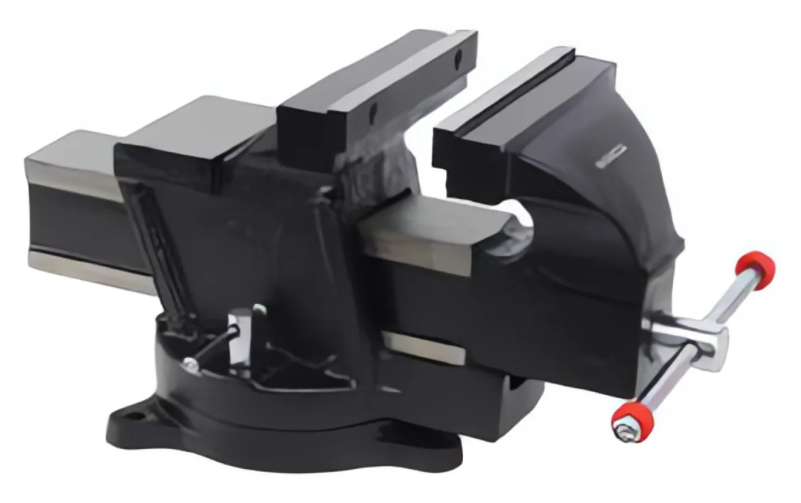

GROZ · Vices & Clamps
Mechanic's Vices Bench Vices
CAT NR BNV/F/200 · ORD NR 35474
| CAT NR (catalogue number) | BNV/F/200 |
|---|---|
| ORD NR (order number) | 35474 |
| Box quantity | 1 |
| Jaw opening (inch) | 8 |
| Jaw opening (mm) | 200 |
| Jaw width (inch) | 8 |
| Jaw width (mm) | 200 |
| Net weight (kg) | 21.5 |
| Throat depth (inch) | 3-9/64 |
| Throat depth (mm) | 80 |
| Table section | FIXED BASE |
Ask for a quote The catalogue PDF, page 91
“Ask for a quote” opens this product in the catalogue: add it to your quote and send it. Buyers from Africa, the Gulf and worldwide are welcome; prices in USD, EUR or INR.
From the GROZ Workshop Tools CB-05 catalogue. Not yet verified: these details were read from the printed catalogue automatically; check the catalogue page before ordering.